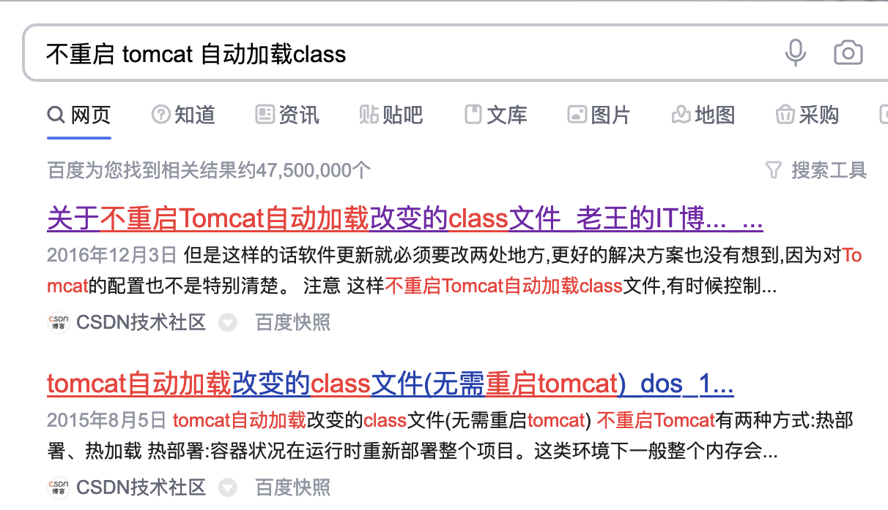
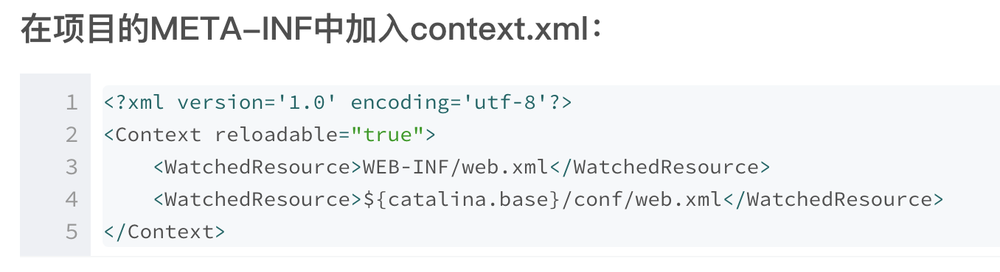
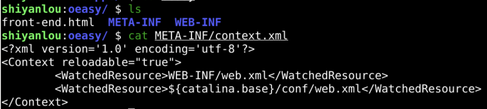
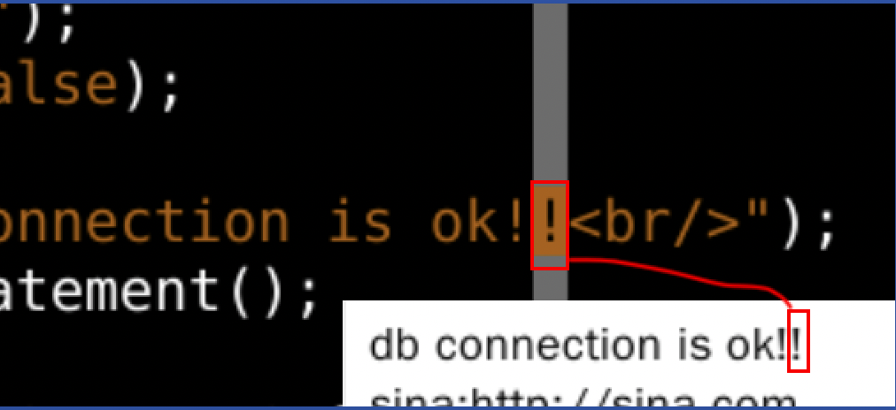
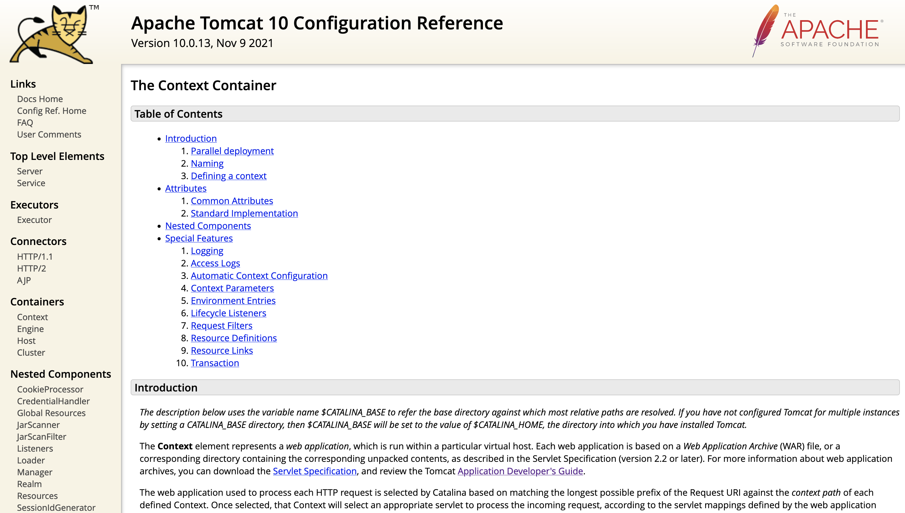
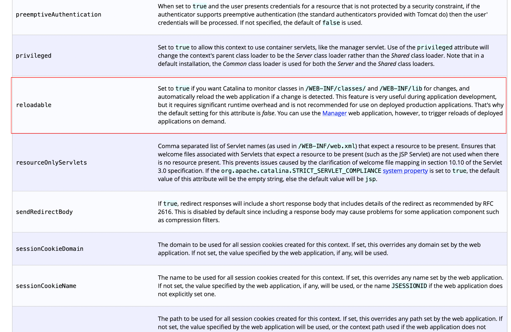
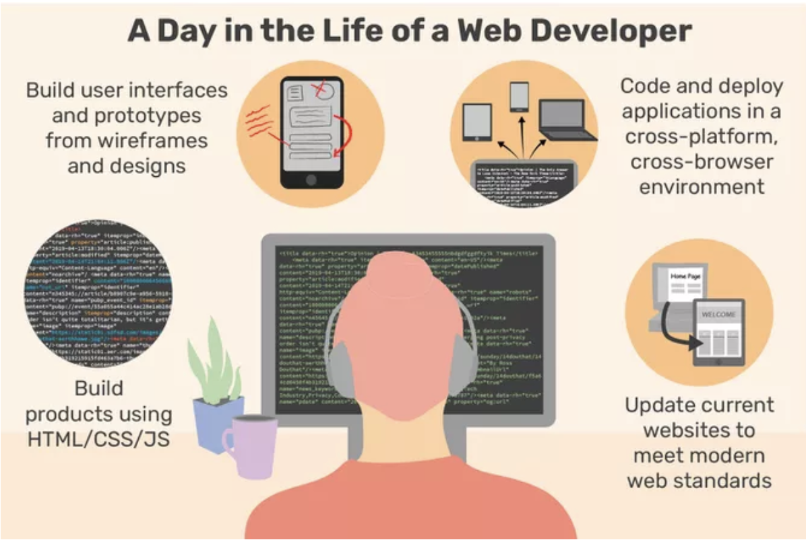

<?xml version='1.0' encoding='utf-8'?>
<Context reloadable="true">
<WatchedResource>WEB-INF/web.xml</WatchedResource>
<WatchedResource>${catalina.base}/conf/web.xml</WatchedResource>
</Context>



